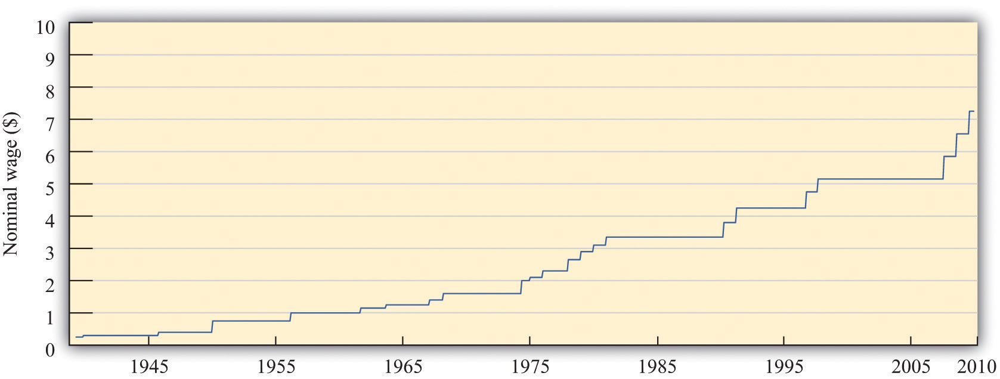
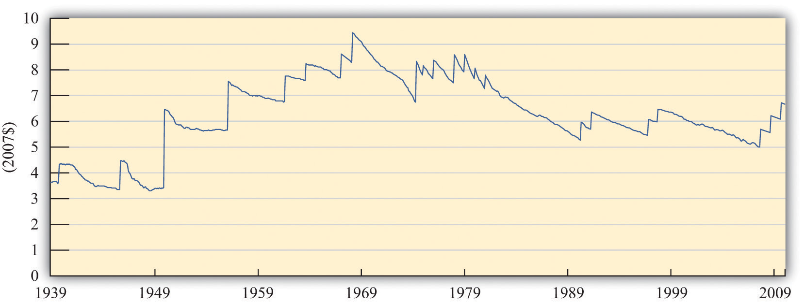
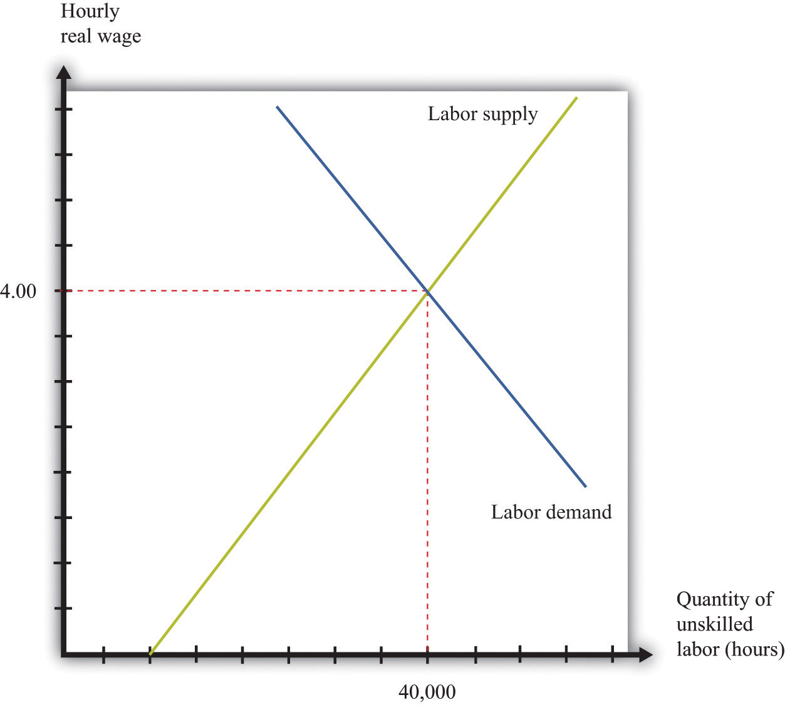

When the federal minimum wage was first introduced in the United States in 1938, it was set at $0.25 per hour. Since then, Congress has raised the minimum wage several times. Figure 11.2 "Nominal Federal Minimum Wage in the United States" shows the minimum wage since 1938. You can see that the wage increases in steps whenever Congress enacts an increase in the wage.
Figure 11.2 Nominal Federal Minimum Wage in the United States
The figure shows the federal minimum wage in the United States. When introduced in 1938 the minimum wage was set at $0.25 per hour. The minimum wage, since 2009, is $7.25 per hour.
Source: US Department of Labor.
The repeated increases in the minimum wage are not primarily due to the increased generosity of the US Congress. As you probably know, prices and wages have also tended to increase over time—a process we call inflationA situation where, on average, the prices of goods and services are increasing.. The price level in 2007 was, on average, 14.8 times higher than in 1938, so $0.25 per hour is equivalent in modern terms to $3.70 ($0.25 × 14.8 = $3.70). Most of the increase in the minimum wage has simply been about keeping up with inflation. That said, the current minimum wage is $7.25, so the federal minimum wage has increased faster than the rate of inflation since its inception.
We call the wage in dollars the nominal wage. It is not the most useful measure of the amount that workers are receiving. Inflation means that a given nominal wage becomes worth less and less over time in terms of the goods and services that it buys. Between 1938 and 1957, for example, the general price level in the United States doubled. Had there been no change in the minimum wage, the $0.25 per hour minimum wage would have been worth only half as much in 1957 as it was when it was established.
The nominal wage is the wage measured in money (dollars in the United States). The real wageThe nominal wage (the wage in dollars) divided by the price level. is the nominal wage in an economy adjusted for changes in purchasing power. It is defined as the nominal wage divided by the general price level:
Workers care about the real wage, not the nominal wage, because the real wage captures the trade-off between leisure time and goods and services. Firms care about the real wage, not the nominal wage, because it measures the true cost of hiring labor. Figure 11.3 "Real Minimum Wage in the United States" shows the real minimum wage—that is, the minimum wage adjusted for inflation. The real minimum wage is defined as
Toolkit: Section 31.8 "Correcting for Inflation"
The conversion from nominal wages to real wages is an example of the more general idea of correcting for inflation. If you have data expressed in nominal terms (for example, in dollars) and want to covert them to real terms, you should follow the following four steps:
Figure 11.3 Real Minimum Wage in the United States
The minimum wage was at its highest in real terms in the 1960s, and the current minimum wage it is still well below that level.
Source: US Department of Labor and Bureau of Labor Statistics. Estimates for 2008 and 2009 are based on 2.5 percent annual inflation (equivalent to the average of the previous two years).
The real minimum wage increases in jumps whenever the nominal wage is increased, but it declines over time as it is eroded by inflation. The erosion of the minimum wage by inflation was recognized by President Clinton in the address that we quoted in our introduction. In that request to Congress he also said:
The first increment of the proposal simply restores the minimum wage to its real value following the change enacted in 1989.
If the Congress does not act now, the minimum wage will fall to its lowest real level in 40 years. That would dishonor one of the great promises of American life—that everyone who works hard can earn a living wage. More than 11 million workers would benefit under this proposal, and a full-time, year-round worker at the minimum wage would get a $1,800 raise—the equivalent of 7 months of groceries for the average family.
When President Clinton referred to “7 months of groceries,” he was converting the increase in the minimum wage into real terms, just as our technique for converting to inflation does. Instead of using the bundle of goods that goes into the CPI, however, he was using a bundle of goods representing groceries for the average family.
The challenge when analyzing the minimum wage is that it is set in nominal terms, but workers and firms care about the real minimum wage. To help us understand the difference, we begin with a specific numerical example of the labor market. Suppose we have the following labor supply-and-demand equations, where labor supply and labor demand are measured in hours:
labor supply = 10,000 × real wageand
labor demand = 72,000 – 8,000 × real wage.Think of this example as referring to the weekly demand for and supply of unskilled labor in a small city. It is reasonable to think of this as a competitive market, in which market participants will typically agree on a price at or close to the point where supply equals demand. In the supply-and-demand framework, the intersection of the supply and demand curves tells us the equilibrium price in the market and the equilibrium quantity traded. In the labor market, the place where supply and demand meet tells us the equilibrium wage and the equilibrium number of hours worked.
Toolkit: Section 31.3 "The Labor Market", and Section 31.9 "Supply and Demand"
You can find more detail about the underpinnings of labor market supply and demand and the workings of the competitive market in the toolkit.
First we solve for the equilibrium in this market. In equilibrium, the quantity of labor supplied equals the quantity of labor demanded, so
10,000 × real wage = 72,000 – 8,000 × real wage.Add (8,000 × real wage) to each side:
18,000 × real wage = 72,000.Then divide both sides by 18,000 to obtain
real wage = 4.If we plug this value of the real wage back into either the supply or the demand equation, we find that the equilibrium quantity of hours worked is 40,000 hours. For example, we might have 1,000 workers, each of whom works a 40-hour week. The equilibrium is illustrated in Figure 11.4 "Labor Market Equilibrium".
Figure 11.4 Labor Market Equilibrium
The market for unskilled labor is in equilibrium at an hourly wage of $4 and a total of 40,000 hours. In this diagram, we assume that the price level is 1, so the real wage equals the nominal wage.
Suppose that this example pertains to the base year. From our discussion of correcting for inflation, we know that in the base year we set the price level equal to 1. When the price level is 1, the real wage equals the nominal wage. In the initial year, therefore,
and
In the base year, the nominal wage is $4 per hour.
Now imagine we have 10 percent inflation, which means that the price of all goods and services in the economy increases by 10 percent over the course of a year. If a household paid $100 a week for groceries last year, it must pay $110 this year; if a household used to pay $500 a month in rent, it must now pay $550; and so on. Turning this around, a dollar is worth less than it used to be; you need $1.10 to purchase what you could have bought for $1 this year. The price level has increased from 1 to 1.1.
To see what this means in terms of the labor market diagram, think about the situation at a given nominal wage, such as $2.20 per hour. Last year, when the price level was 1, households were willing to supply 22,000 hours (= 10,000 × 2.2). But $2.20 now is worth the equivalent of only $2, so households are willing to supply only 20,000 (10,000 × = 10,000 × 2) hours of labor instead. The same idea applies at every wage; households will supply only the amount of labor that they would previously have supplied when the wage was 10 percent higher.
A similar logic applies to the demand for labor. The increase in the price level means that firms get 10 percent more dollars for the goods that they sell. As a consequence, the labor performed by workers generates more dollars than it used to. If it was worth paying $7 for an hour of work before, it is now worth paying $7.70 for that same hour of work.
In terms of real wages, however, nothing has changed. The equilibrium real wage is still $4, as it was before. But because
the nominal wage must increase by 10 percent to match the increase in the price level. The equilibrium in the labor market is shown in Figure 11.5 "Labor Market Equilibrium after 10 Percent Inflation". It is no coincidence that this diagram looks exactly the same as Figure 11.4 "Labor Market Equilibrium"; that is the point. An increase in the price level is matched by an increase in the nominal wage, and nothing changes in terms of the real wage or the real equilibrium quantity of labor.
Figure 11.5 Labor Market Equilibrium after 10 Percent Inflation
If there is 10 percent inflation, the price level increases from 1 to 1.1, the real wage is unchanged, and the nominal wage increases by 10 percent.